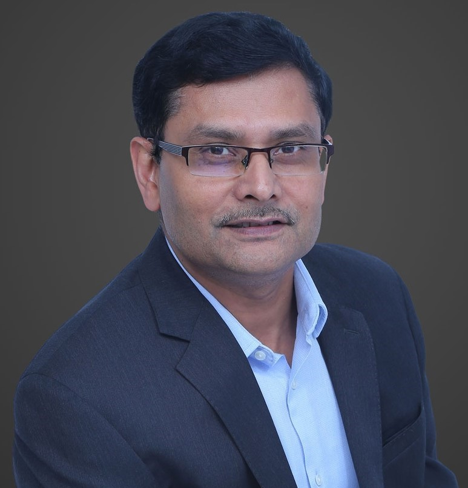
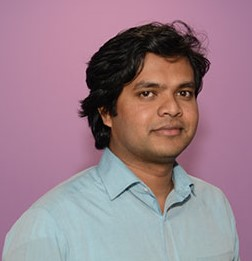
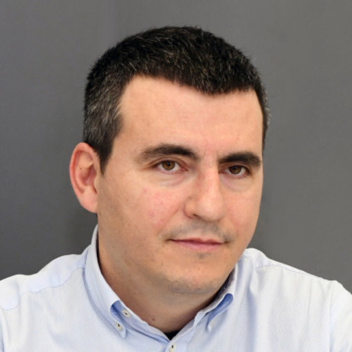
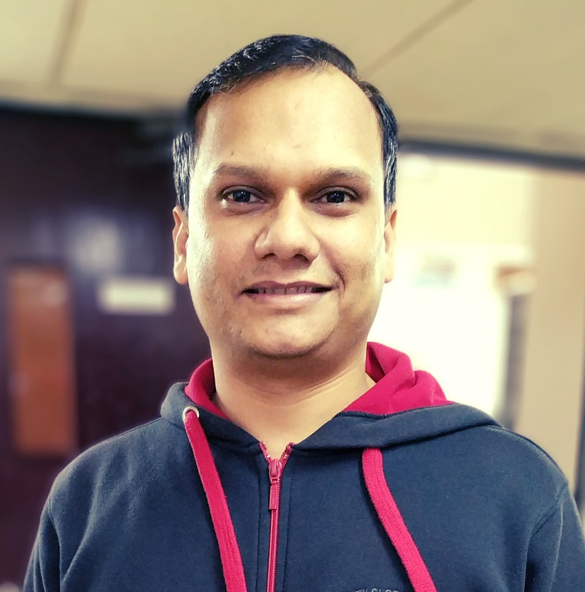
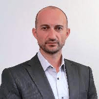
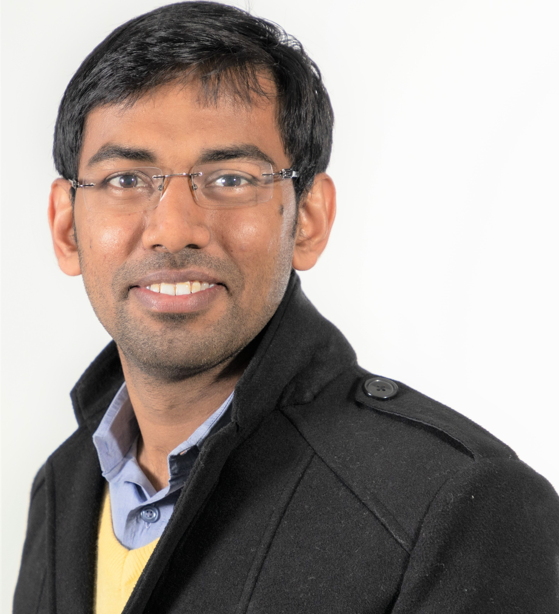

|
A Three-day Workshop onInternet of Things: Trends and ApplicationsIndian Institute of Information Technology Sri CityChittoor, Andhra Pradesh, IndiaNovember 3-5, 2022 |

Internet of Things: Trends and Applications
For the last few years, Internet of Things (IoT) has been popular across the globe in the Computer Science research community. It is expected that in the very near future, IoT technology will provide an opportunity to identify individual things uniquely and establish global connectivity among these things. Multiple technologies – smart sensors, cloud computing, Fog/Edge computing – are involved in the development of an IoT infrastructure. All of these technologies have their roles to enable an IoT platform for serving different end-user applications including healthcare, agriculture, transportation, industries, and defense. Additionally, the rapid development of IoT devices helps in the smooth execution of IoT platforms.
The different IoT devices are developed by different vendors. In such a situation, bringing these devices on a common platform and establishing connectivity among them are non-trivial tasks. Moreover, the rapid growth in the development of diverse IoT devices results in difficulty in managing them. Therefore, different researchers across the globe put their effort into supporting efficient IoT platforms by providing their respective technological solutions to address the various challenges – device management, data management, communications, and security – in IoT.
In this workshop, we plan to invite a few renowned researchers (speakers), from academia and industries, across the world to discuss their research works. We also plan to categorize this workshop into multiple thematic areas of IoT.
ADVANTAGES
This workshop will provide a platform to bring renowned academicians, researchers, students, and working professionals together and share different technical and non-technical ideas among them. The participants of this workshop will obtain multi-fold advantages. Specifically, the following advantages can be obtained by a participant:
PATRON
| Prof. G. Kannabiran Director, Indian Institute of Information Technology Sri City (An Institute of National Importance under an Act of Parliament) 630 Gnan Marg, Sri City, Chittoor District - 517 646 Andhra Pradesh, India Founder & Managing Director Gyan Circle Ventures, IIIT Sri City Founder & Director Founder & Director Centre for Entrepreneurship Development and Incubation (Section 8 Co promoted by NIT Trichy) |
SPEAKERS
Keynote Speakers
 |
 |
Sudip Misra Humboldt Fellow (Germany), ACM Distinguished Member FIEEE, FNASc (India), FNAE (India), FIET (UK), FBCS (UK), FIETE (India), FRSPH (UK) Professor & INAE Abdul Kalam Technology Innovation National Fellow, Indian Institute of Technology, Kharagpur, India |
Aloknath De FNAE, FIE, FIETE Missionpreneur : Frontier R&D for Business Edge Cyber-Physical Systems Exec Consulting Director & ex-CTO, Samsung Adjunct Prof. IISc & IIT-J Tech Startup Mentor-Investor ex-MD, ST-Ericsson |
Expert Speakers
Track 1: Network and Communications in IoT
 |
|
Dr. Sucharita Chakraborty Scientist at Space Applications Centre, Indian Space Research Organisation (ISRO) |
Dr. Ayan Mondal Assistant Professor, Department of Computer Science and Engineering, Indian Institute of Technology, Indore |
Track 2: Data Handling in IoT
Dr. Prajna Upadhyay Research Engineer at CEDAR Team, Inria Saclay, France |
Dr. Saharnaz Dilmaghani AI & Data Analytics Consultant, PwC, Luxembourg |
Track 3: IoT Security
|  |  |
Dr. Yogachandran Rahulamathavan Senior Lecturer, Institute for Digital Technologies Loughborough University, London |
Dr. Panagiotis Sarigiannidis Director of ITHACA Lab Co-founder, MetaMind Innovations P.C. Associate Prof. University of Western Macedonia |
Track 4: IoT Applications
 |
 |
Dr. Anandarup Mukherjee Vice Chair, IEEE P1954 Standards Committee (Standard for Self-Organizing Spectrum-Agile Unmanned Aerial Vehicles Communications) Research Associate, Institute for Manufacturing, University of Cambridge, UK |
Dr. Om Jee Pandey Assistant Professor, Indian Institute of Technology (BHU), Varanasi India |
|  | |
Dr. Grégoire Danoy Research Scientist and Deputy-Head Parallel Computing and Optimisation Group (PCOG) University of Luxembourg (UL) |
Dr. Nurzaman Ahmed Post-doctoral Researcher, Dartmouth College, Hanover, NH, USA |
REGISTRATION
Participants
Category A: Pursuing ME/M.Tech/MBA/MCA/MSc, Doctoral Students
Category B: Post Doctoral Researcher, Researchers (working in a research organization), Faculty, and Working Professionals
Category C: International Participants
Registration Fees: Category A: INR 300, Category B: INR 1000, Category C: USD 50
Payment Instructions: Click here
Registration form: Click here
Registration Steps:
Step 1: A domestic participants must pay the workshop registration fees, using SBI Collect. Please note that the International participants must pay the registration fees through bank transfer (Details are mentioned in the payment instructions)
Step 2: Note down/copy the payment transaction id
Step 3: Fill the registration form, where you have to include the transaction id correctly. Please note that without entering the correct payment transaction id, the registration will not be confirmed.
Download info in brief: Click Here
Email: info.iota@iiits.in
PROGRAM
TBA
CONVENER
|  |
| Dr. Arijit Roy India-France Raman-Charpak Fellow Ex-Member, Mirror committee of Luxembourg, ISO/IEC JTC 1/SC 41: IoT and Digital Twin Former Council of Scientific & Industrial Research Senior Research Fellow Area Expert, IEEE ComSoc Technical Committee e-Health SIG on IoT Assistant Professor || Co-ordinator, E-Cell Department of Computer Science and Engineering Indian Institute of Information Technology Sri City (An Institute of National Importance under an Act of Parliament) 630 Gnan Marg, Sri City, Chittoor District - 517 646 Andhra Pradesh, India |